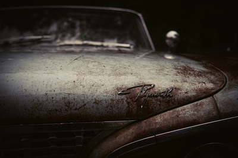

Donec ac vulputate metus. Aliquam erat volutpat. Pellentesque habitant morbi tristique senectus et netus et malesuada fames ac turpis egestas. Ut congue nisl tellus, non congue  I believe this is an old car. I can not be sure. I’m sure this is a caption however. eros varius ut. Pellentesque erat sapien, dignissim ut urna et, convallis posuere ex. Cras sed mauris ultricies, viverra odio quis, ultrices sem. Nullam ante purus, vestibulum vitae urna ut, condimentum mattis turpis. Phasellus ac rutrum ipsum. Nulla condimentum nibh lacus, ut consectetur risus pellentesque ac. Nam lectus velit, imperdiet tempor turpis in, pharetra feugiat neque.
Quisque vitae placerat urna, eu vestibulum sem. Nulla finibus semper nisl vel vestibulum. Donec commodo volutpat sem sed ullamcorper. Nam ut sapien metus. Praesent ultrices dolor nec nisl malesuada finibus. Donec imperdiet leo vel lectus cursus finibus. Mauris a enim at lorem varius tempus nec varius justo. Cras vestibulum sem vitae arcu porta aliquet. Duis eget augue rutrum massa auctor egestas nec vitae urna. Nunc ultrices consectetur interdum. Mauris vehicula leo in faucibus consequat. Nulla euismod condimentum sollicitudin. Ut porttitor nunc vel dui congue facilisis. Cum sociis natoque penatibus et magnis dis parturient montes, nascetur ridiculus mus. Proin sed turpis at nulla condimentum tempor in at sem.